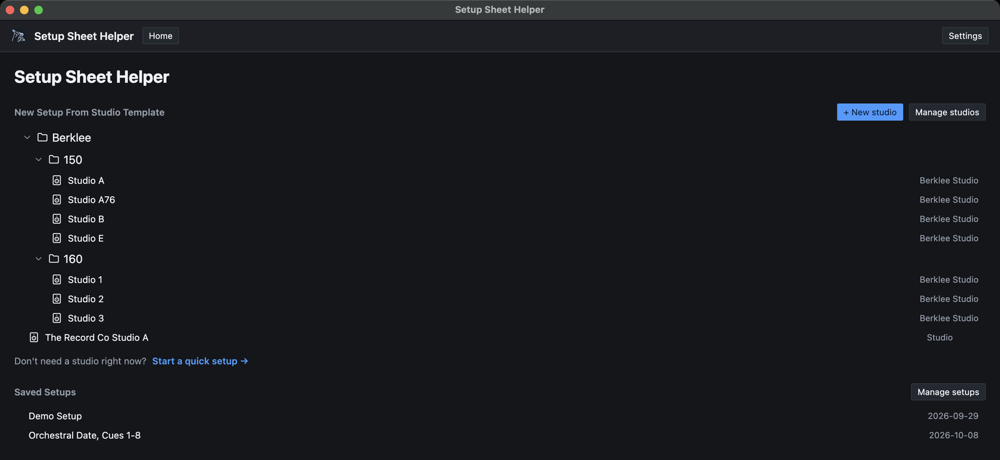
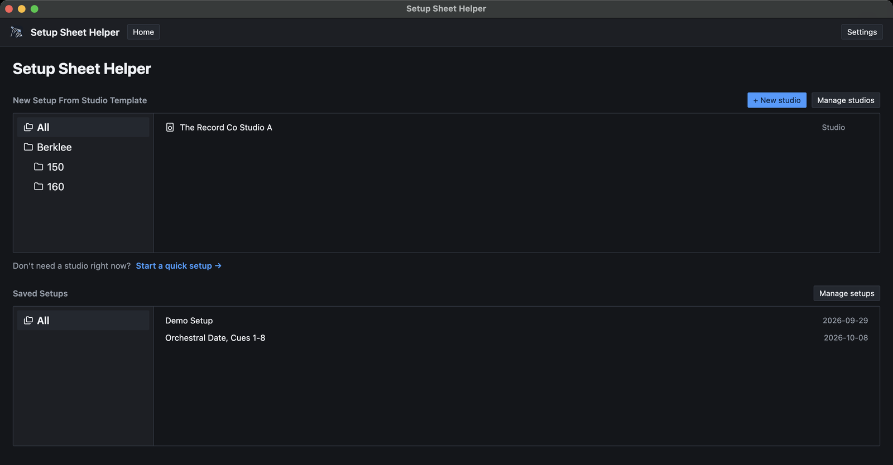
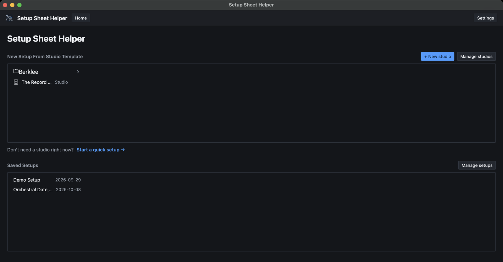
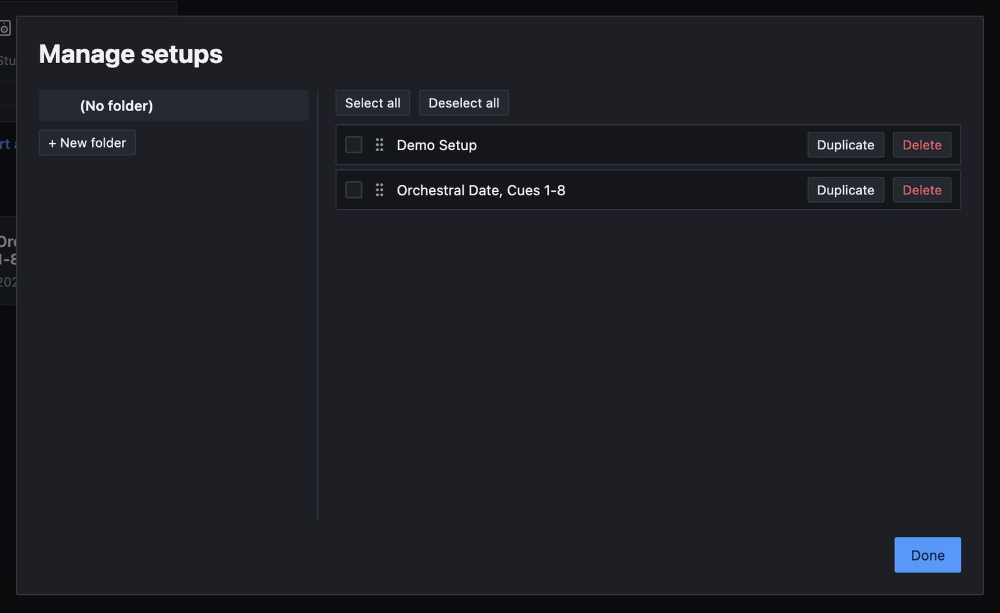

Part 8
Organizing your work
After a few months you'll have a lot of setups, and maybe several rooms. This part covers the home screen, how to change its layout, and how to file, reorder and delete things with folders and the Manage dialogs.
The home screen
The home screen has two sections.
- New Setup From Studio Template is where new setups start. It lists your studios (labeled Studio), any templates you've saved (labeled Gear list), and the Berklee folder if Berklee features are on. Its header has + New studio and Manage studios.
- Saved Setups lists the setups you've made, each with its session date, or no date. Click one to open it. Its header has Manage setups.
Between the two is Start a quick setup →, for a one-off sheet with no studio behind it. Part 1 explains it.

Studios and setups each have their own folders. A folder you make for studios only appears in the top section, and a folder for setups only appears under Saved Setups. Channel presets have a third set of folders of their own.
To change a studio's gear, click Edit inventory on its card. Part 6 covers the studio editor.
Home screen layouts
The home screen can show your folders four ways. Open Settings (⌘,), stay on the General tab, and choose under Home screen layout. Both sections use the layout you pick.
Blocks
The default. Folders and items are cards in a grid. Click a folder to open it, and use the path above the cards (starting at Top) to go back. Each studio card has its own Edit inventory button. The screenshot above shows Blocks.
File tree
The whole hierarchy at once, as a list. Click the arrow beside a folder to expand or collapse it. Good when you know exactly where things are.

Two-pane
Folders on the left and the chosen folder's contents on the right. Choose All at the top of the folder list to see everything.

Columns
Cascading columns, like the column view in Finder. Each folder you click opens the next column to its right.

In the File tree, Two-pane and Columns layouts, a studio's Edit inventory button is a pencil icon at the end of its row.
Folders
You can make a folder wherever you're asked to choose one, or in the Manage dialogs.
- Setup folders: in the New setup dialog's folder picker, or in Manage setups.
- Studio folders: in the studio editor's Folder picker, in the Save as Studio dialog, or in Manage studios.
- Preset folders: in the Save channel preset dialog, or in Manage presets.
In a folder picker, click + New folder…, type a name and click Add. To put a folder inside another, click the + on the parent folder's row instead. Folders can go as deep as you like.
In a Manage dialog, click + New folder under the folder list. Point at a folder there to show its three buttons: New Subfolder, Rename and Delete.
A simple scheme works well: one setup folder per client or project, and one studio folder per building or city.
Manage studios, setups and presets
Three dialogs share one design:
- Manage studios, on the home screen, for your studios and gear lists. Berklee rooms aren't listed.
- Manage setups, on the home screen, for your saved setups.
- Manage presets, from Presets → Manage presets… in the editor or Manage channel presets… in Settings → General.
Folders are on the left, with (No folder) at the top for anything that isn't filed. Click a folder to see what's in it on the right. If you have a lot of folders, type in Search folders to find one.

Reordering and filing
- Reorder: drag an item by its handle (the dots beside its name). The home screen shows items in this order.
- File in a folder: drag an item onto a folder on the left. Drag it onto (No folder) to take it out of every folder.
- Several at once: tick the checkboxes, or use Select all and Deselect all. Then drag any ticked item onto a folder and they all move together.
Buttons on each item
- Delete, on every item.
- Duplicate, in Manage setups only. Part 7 explains it.
- Edit, in Manage presets only, to change a preset's name and description.
Click Done when you're finished. Moves and reorders take effect straight away.
Deleting things
Every delete asks you to confirm first and warns you: This can't be undone. If you might want something back, export a copy first. Part 11 shows how.
Several items at once
Tick the items, then click Delete 3 selected (the number matches how many you ticked).
Deleting a studio
Deleting a studio also deletes every setup and gear list made from it. The confirmation says how many, for example This also deletes 3 setups and 1 template in this studio. Check the count before you click Delete.
Deleting a folder
The confirmation first counts what's inside, for example This folder contains 2 subfolders, 3 studios, and 5 setups. Then you choose:
- Move contents up deletes only the folder. Everything directly inside it moves up one level, into the folder that held it. Nothing else is deleted.
- Delete everything deletes the folder, its subfolders and everything in them. For a studio folder, that includes the setups made from those studios, even ones filed in a setup folder somewhere else. The count above includes them.
When in doubt, choose Move contents up. It never deletes a studio, setup or preset, and you can tidy up afterward.